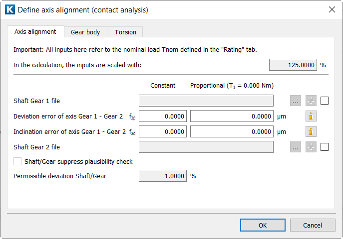

|
|
|


主设置
在对话框中，您可以定义轴的比例偏差误差和恒定偏差误差（fΣβp、fΣβc）以及轴的倾角误差（fΣδp、fΣδc）。轴的比例偏差/倾角误差在公称转矩下定义，并通过载荷系数根据相应的 ISO 系数策略进行缩放。缩放规则在对话框和选项卡中定义。
除了直接定义轴的偏差和倾角（线性变形模型）外，您还可以使用轴计算文件，以便更精确地定义安装齿轮的轴所受到的弯曲和扭转影响。
下面介绍对话框。您在此通过轴计算文件确定轴线对中。在 "File Shaft Gear 1/Gear 2" 字段中输入小齿轮 (1) 或齿轮 (2) 所属轴的文件名。必须输入文件的完整路径（例如 C:\MyCalculations\ContactAnalysis\pinion_shaft.W10）。但是，如果轴文件存储在与齿轮计算文件 Z12 相同的文件夹中，则只需输入轴计算文件的名称（如图所示）。
载荷的缩放结果以 % 显示在对话框的上部。

图15.24：定义轴对齐（行星和齿轮副）
如果使用轴文件，则选择额外的Plus按钮以选择需考虑的啮合。
锥形扩展可应用于内齿轮。
Main settings
The dialog is where you define the proportional and constant deviation error of axis (fΣβp, fΣβc) and the inclination error of axis (fΣδp, fΣδc). The proportional deviation/inclination error of axis is defined at the nominal torque and scaled with the corresponding ISO coefficients strategy via the load factors. The scaling is defined in the dialog and in the tab.
Instead of defining the deviation and inclination of the axes directly (linear deformation model), you can use shaft calculation files for a more precise definition of the effect of bending and torsion on the shafts on which the gears are mounted.
The dialog is described below. This is where you determine the axis alignment by using the shaft calculation files. In the "File Shaft Gear 1/Gear 2" fields, enter the file name for the shafts to which the pinion (1) or the gear (2) belong. You must input the file name with its entire path (for example C:\MyCalculations\ContactAnalysis\pinion_shaft.W10). However, if the shaft files are stored in the same folder as the gear calculation file Z12, you only need to input the name of the shaft calculation file (as shown in the figure).
The resulting scaling of the load is displayed in % in the upper part of the dialog.
Figure 15.24: Define axis alignment (planets and gear pair)
If a shaft file is used, select the additional Plus button to select the meshing that is to be taken into account.
Conical expansion can be taken into account for internal gears.